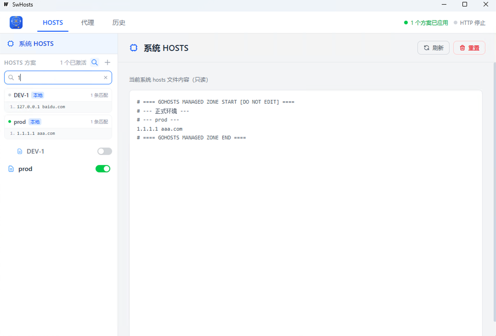

简洁高效的本地 hosts 管理工具 一键切换环境，轻松管理多个开发域名
无需注册，下载即用

为本地开发场景设计的常用功能
分组管理多个 hosts 方案，一键切换激活状态，自动写入系统 hosts 文件。
点击开关即可激活或关闭方案，实时生效，无需手动编辑 /etc/hosts。
将本地域名请求转发到指定端口，支持自定义端口，前端开发调试更方便。
选择适合你系统的版本
macOS 用户如遇"无法验证开发者"，请右键 app 图标选择"打开"